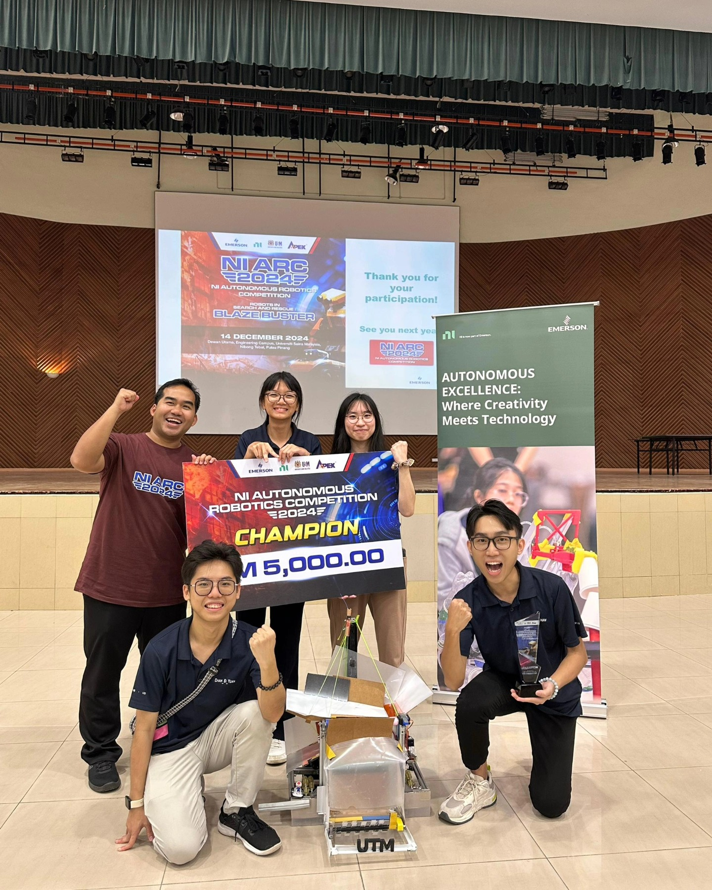
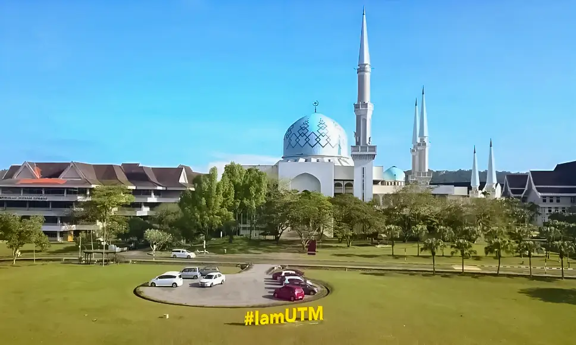
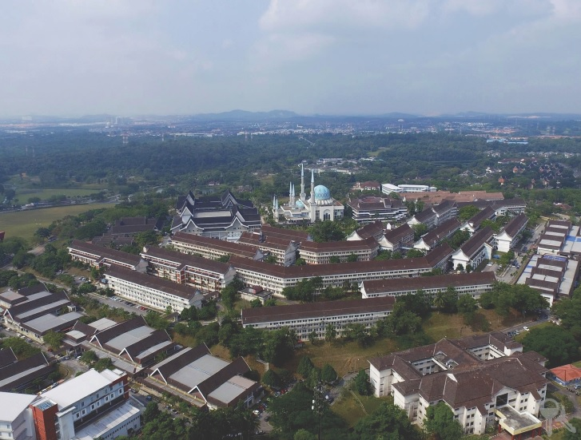
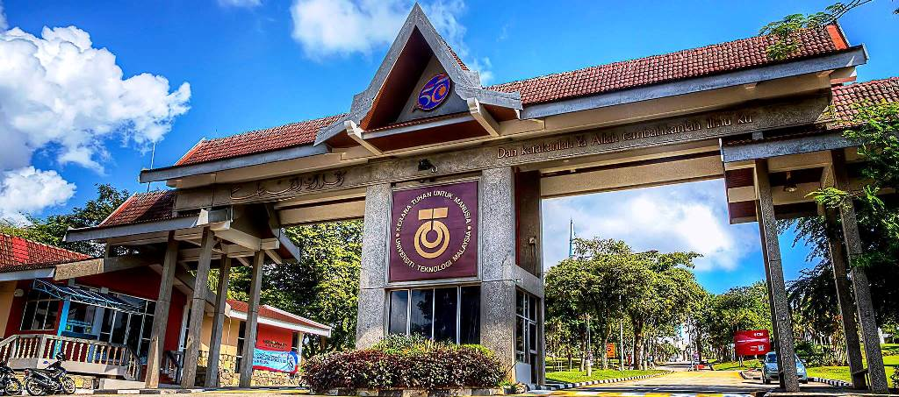
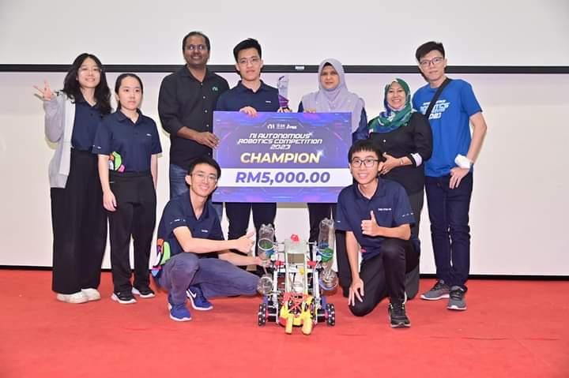
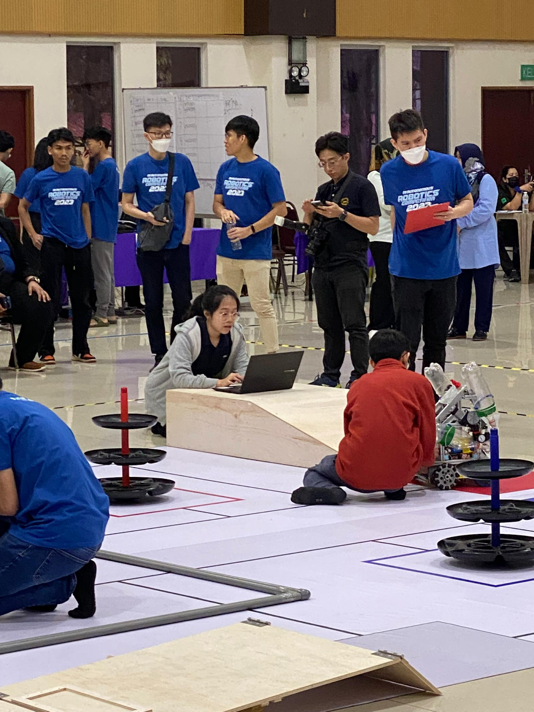

University overview
About Universiti Teknologi Malaysia
Established in 2004, Universiti Teknologi Malaysia (UTM) has grown into a dynamic private university focused on delivering career-oriented education. Originally founded as the Masterskill School of Nursing and Healthcare, UTM achieved full university status in 2012 and expanded its academic portfolio into Business Management, Information Technology, Computer Science, and Allied Health Sciences.
Fully accredited by the Malaysian Qualifications Agency (MQA) and recognized internationally by the Accreditation Service for International Schools, Colleges & Universities (ASIC), UTM provides industry-focused diplomas, bachelor's degrees, and postgraduate qualifications designed to equip graduates with practical skills for the modern workforce.






International students
Study at Universiti Teknologi Malaysia as an international student
Compare Universiti Teknologi Malaysia courses, campuses, fees and entry requirements for your intended intake.
Programmes and tuition
Universiti Teknologi Malaysia UTM courses and fees for international students
| No | Programme | Semester |
|---|---|---|
| 1 | Bachelor of Civil Engineering with Honours | 8 Semesters |
| No | Programme | Semester |
|---|---|---|
| 1 | Bachelor of Electrical Engineering with Honours | 8 Semesters |
| 2 | Bachelor of Engineering (Electrical-Mechatronics) with Honours | 8 Semesters |
| 3 | Bachelor of Electronic Engineering with Honours | 8 Semesters |
| 4 | Bachelor of Biomedical Engineering with Honours | 8 Semesters |
Download FACULTY OF ELECTRICAL ENGINEERING (UNDERGRADUATE) (ZIP)
| No | Programme | Semester |
|---|---|---|
| 1 | Bachelor of Mechanical Engineering with Honours | 8 Semesters |
| 2 | Bachelor of Mechanical Engineering (Manufacturing) with Honours | 8 Semesters |
| 3 | Bachelor of Mechanical Engineering (Aeronautics) with Honours | 8 Semesters |
| 4 | Bachelor of Naval Architecture and Offshore Engineering with Honours | 8 Semesters |
Download FACULTY OF MECHANICAL ENGINEERING (UNDERGRADUATE) (ZIP)
| No | Programme | Semester |
|---|---|---|
| 1 | Bachelor of Chemical Engineering with Honours | 8 Semesters |
| 2 | Bachelor of Chemical Engineering (Bioprocess) with Honours | 8 Semesters |
| 3 | Bachelor of Chemical Engineering (Gas) with Honours | 8 Semesters |
| 4 | Bachelor of Nuclear Engineering with Honours | 8 Semesters |
| 5 | Bachelor of Petroleum Engineering with Honours | 8 Semesters |
Download FACULTY OF CHEMICAL AND ENERGY ENGINEERING (UNDERGRADUATE) (ZIP)
| No | Programme | Semester |
|---|---|---|
| 1 | Bachelor in Software Engineering with Honours | 8 Semesters |
| 2 | Bachelor of Computer Science (Computer Networks and Security) with Honours | 8 Semesters |
| 3 | Bachelor of Computer Science (Graphics and Multimedia Software) with Honours | 8 Semesters |
| No | Programme | Semester |
|---|---|---|
| 1 | Bachelor of Science in Architecture with Honours | 6 Semesters |
| 2 | Bachelor of Landscape Architecture with Honours | 8 Semesters |
| 3 | Bachelor of Urban and Regional Planning with Honours | 8 Semesters |
| 4 | Bachelor of Quantity Surveying with Honours | 8 Semesters |
| 5 | Bachelor of Real Estate with Honours | 8 Semesters |
| 6 | Bachelor of Science in Construction with Honours | 8 Semesters |
| 7 | Bachelor of Geomatics Engineering with Honours | 8 Semesters |
| 8 | Bachelor of Science in Geoinformatics with Honours | 8 Semesters |
| 9 | Bachelor of Science in Land Administration and Development with Honours | 8 Semesters |
Download FACULTY OF BUILT ENVIRONMENT AND SURVEYING (UNDERGRADUATE) (ZIP)
| No | Programme | Semester |
|---|---|---|
| 1 | Bachelor of Science (Chemistry) with Honours | 8 Semesters |
| 2 | Bachelor of Science (Mathematics) with Honours | 8 Semesters |
| 3 | Bachelor of Science (Physics) with Honours | 8 Semesters |
| 4 | Bachelor of Science (Industrial Chemistry) with Honours | 8 Semesters |
| 5 | Bachelor of Science (Industrial Mathematics) with Honours | 8 Semesters |
| 6 | Bachelor of Science (Industrial Physics) with Honours | 8 Semesters |
| 7 | Bachelor of Science Biology with Honours | 8 Semesters |
| 8 | Bachelor of Science in Biotechnology with Honours | 8 Semesters |
| No | Programme | Semester |
|---|---|---|
| 1 | Bachelor of Management with Honours | 6 Semesters |
| 2 | Bachelor in Accounting with Honours | 7 Semesters |
| 3 | Bachelor of Management (Marketing) with Honours | 8 Semesters |
| No | Programme | Semester |
|---|---|---|
| 1 | Bachelor in Human Resource Development with Honours | 8 Semesters |
| 2 | Bachelor of Psychology with Human Resource Development with Honours | 8 Semesters |
Download FACULTY OF SOCIAL SCIENCES AND HUMANITIES (UNDERGRADUATE) (ZIP)
| No | Programme | Semester |
|---|---|---|
| 1 | Bachelor of Chemical Process Engineering with Honours | 8 Semesters |
| 2 | Bachelor of Electronic Systems Engineering with Honours | 8 Semesters |
| 3 | Bachelor of Mechanical Precision Engineering with Honours | 8 Semesters |
| 4 | Bachelor in Software Engineering with Honours | 8 Semesters |
| 5 | Bachelor of Science (Industrial Mathematics) with Honours | 8 Semesters |
Download MALAYSIA - JAPAN INTERNATIONAL INSTITUTE OF TECHNOLOGY (MJIIT) (UNDERGRADUATE) (ZIP)
| No | Programme | Semester |
|---|---|---|
| 1 | Bachelor in Artificial Intelligence with Honours | 6 Semesters |
| 2 | Bachelor of Science with Honours (Industrial Design) | 8 Semesters |
Download FACULTY OF ARTIFICIAL INTELLIGENCE (UNDERGRADUATE) (ZIP)
| No | Programme / Category | 1st Semester | Total Tuition Fee |
|---|---|---|---|
| 1 | Accounting | RM 13,258 (USD 3,100) | RM 63,000 (USD 14,800) |
| 2 | Computer IT | RM 14,258 (USD 3,300) | RM 71,000 (USD 16,700) |
| 3 | Engineering | RM 14,758 (USD 3,400) | RM 75,000 (USD 17,700) |
| 4 | Human Resource Development / Marketing | RM 13,258 (USD 3,100) | RM 63,000 (USD 14,800) |
| 5 | Sciences | RM 13,258 (USD 3,100) | RM 63,000 (USD 14,800) |
| 6 | Quantity Survey, Landscape Architure, Industrial Design | RM 13,258 (USD 3,100) | RM 63,000 (USD 14,800) |
| 7 | Geoinformation/Property Management | RM 12,758 (USD 3,000) | RM 59,000 (USD 13,900) |
| 8 | Architecture | RM 13,730 (USD 3,200) | RM 51,620 (USD 12,100) |
| 9 | Management | RM 12,758 (USD 3,000) | RM 45,788 (USD 10,800) |
| 10 | Artificial Intelligence | RM 14,258 (USD 3,300) | RM 58,508 (USD 13,800) |
| 11 | Malaysia - Japan International Institute of Technology | - | - |
| 12 | Bachelor of Electronic Systems Engineering with Honours | RM 14,758 (USD 3,400) | RM 75,000 (USD 17,700) |
| 13 | Bachelor of Mechanical Precision Engineering with Honours | RM 14,758 (USD 3,400) | RM 75,000 (USD 17,700) |
| 14 | Bachelor of Chemical Process Engineering with Honours | RM 14,758 (USD 3,400) | RM 75,000 (USD 17,700) |
| 15 | Bachelor in Software Engineering with Honours | RM 14,883 (USD 3,500) | RM 76,000 (USD 17,900) |
| 16 | Bachelor of Science (Industrial Mathematics) with Honours | RM 14,883 (USD 3,500) | RM 76,000 (USD 17,900) |
Schedule remarks:
ENGLISH PROGRAMME:
- Intensive English Programme (IEP): RM 12,469 (USD 2,900)
- Certified Intensive English Programme (CIEP): RM 7,569 (USD 1,700)
BRIDGING PROGRAMME:
- BRIDGING FEE: RM 11,469 (USD 2,700)
*The fees in USD based on estimated rate.
*The fees are subject to change. UTM reserves the right to revise the fees mentioned that are deemed necessary.
| No | Description | Cost (Semester) |
|---|---|---|
| 1 | English Program & Registration Fee | RM 12,469 (USD 2,900) |
| 2 | Hostel | RM 2,700 (USD 600) |
| 3 | Cost of living | RM 6,000 (USD 1,400) |
Schedule remarks:
Total Cost: RM 21,169 (USD 4,900)
| No | Description | Cost (Semester) |
|---|---|---|
| 1 | Bridging & Registration Fee | RM 11,469 (USD 2,700) |
| 2 | Hostel | RM 2,700 (USD 600) |
| 3 | Cost of living | RM 6,000 (USD 1,400) |
Schedule remarks:
Total Cost: RM 20,169 (USD 4,700)
| No | Description | Cost (Semester) |
|---|---|---|
| 1 | Tuition & Registration Fee | RM 14,758 (USD 3,400) |
| 2 | Hostel | RM 2,700 (USD 600) |
| 3 | Cost of living | RM 6,000 (USD 1,400) |
Schedule remarks:
Total Cost: RM 23,458 (USD 5,400)
| No | Programme | Study Mode |
|---|---|---|
| 1 | Master of Science (Biomedical Engineering) | Taught Course |
| 2 | Master of Engineering (Wireless Communication and Network) | Taught Course |
| 3 | Master of Engineering (Computer and Microelectronic Systems) | Taught Course |
| 4 | Master of Engineering (Electrical Power) | Taught Course |
| 5 | Master of Engineering (Mechatronics and Automatic Control) | Taught Course |
| 6 | Master of Philosophy | Research |
| 7 | Doctor of Philosophy | Research |
Schedule remarks:
Areas of Research include: Biomedical Engineering, Rehabilitation Technology, Electrical Engineering, Health Science, Wireless Communication, RF and Microwave, Optical Communication, Artificial Intelligence, Robotics, Control and Instrumentation, High Voltage and High Current, Power System, Power Electronics and Drives, Computer Vision, Digital Signal Processing, Biomedical Devices and Technology, VLSI and Embedded Computing, Microelectronics, Diagnostics and Rehabilitation, Tissue Engineering, Cardiovascular Engineering, Sports Innovation and Technology.
Notes: 1. A comprehensive list of research areas can be found at the respective faculty websites. 2. Areas and disciplines for Masters by Research and PhD study other than listed above will be offered as Generic Programmes at faculties and schools.
Download FACULTY OF ELECTRICAL ENGINEERING (POSTGRADUATE) (ZIP)
| No | Programme | Study Mode |
|---|---|---|
| 1 | Master of Engineering (Civil) | Taught Course |
| 2 | Master of Engineering (Construction Management) | Taught Course |
| 3 | Master of Engineering (Environmental Management) | Taught Course |
| 4 | Master of Engineering (Structure) | Taught Course |
| 5 | Master in Geotechnical Engineering | Taught Course |
| 6 | Master of Engineering in Hydraulics and Hydrology | Taught Course |
| 7 | Master of Engineering Transportation | Taught Course |
| 8 | Master of Project Management | Taught Course |
| 9 | Master of Forensic Engineering | Taught Course |
| 10 | Master of Philosophy | Research |
| 11 | Doctor of Philosophy | Research |
| 12 | Master of Forensic Engineering | Open & Distance Learning (ODL) |
Schedule remarks:
Areas of Research include: Coastal and Maritime, Materials, Construction, Geotechnics, Transportation, Highway and Traffic, Structures and Materials, Environment, Hydrology and Water Resources, Hydraulics and Hydrology, Structures, Hydraulics, Civil Engineering.
Notes: 1. A comprehensive list of research areas can be found at the respective faculty websites. 2. Areas and disciplines for Masters by Research and PhD study other than listed above will be offered as Generic Programmes at faculties and schools.
| No | Programme | Study Mode |
|---|---|---|
| 1 | Master of Science (Mechanical Engineering) | Taught Course |
| 2 | Master of Science (Industrial Engineering) | Taught Course |
| 3 | Master of Philosophy | Research |
| 4 | Doctor of Philosophy | Research |
Schedule remarks:
Areas of Research include: Marine Technology, Mechanical Engineering, Applied Mechanics & Design, Adaptive Control and Intelligent System, Computational Solid Mechanics, Mechatronics & Instrumentation, Artificial Intelligence, Elasticity & Plasticity, Automatic Control & System Engineering, Fatigue and Fracture Mechanics, Biomechanics & Biomedical Engineering, Finite Element Method, Functional Control Systems, CAD & Virtual Reality, Guided Wave & Acoustic, Composite Structure & Ballistic Impact, Structural Dynamic & Mechanics, Structural Impact & Crashworthiness, Thin-Walled and Polymeric Materials, Tissue Engineering Scaffolds, Porous Structures, Reliability & Engineering, Design, Shells & Pressure Vessels, Structural Vibration, Condition Monitoring, Thermofluids, Advanced Refrigeration and Air-Conditioning System, Combustion & Heat Transfer, Compressible Flow, Computational Fluid Dynamics, Fuel Biomass and Energy, Heating & Ventilation, Micro-Cooling, Sustainable Energy Technology, Measurement and Diagnostics, Energy Management, Tribology & lubrication, Materials Manufacturing & Industry, Advanced Manufacturing Process, Advanced Materials, Automation in Manufacturing, CAD/CAPP/CAM/CNC, Carbon Nanomaterials, Ceramics and Composites, Ceramics Coating, Ferrous metallurgy, Solder Metallurgy Technology, Solid State Kinetics, Surface Coating, Surface Treatment and Industrial Engineering, Surface Engineering and Composites Machining, Sustainable Product Design, System Dynamic Modeling, Virtual Manufacturing Work Design, Quality improvement and Design Improvement, Operations Management Research, Life cycle Assessment, Supply chain Management, Lean manufacturing Facility design and Management, Automotive Aeronautic & Offshore, Advanced Ice-Ship, Aerodynamics, Airspace Safety Monitoring System, Automotive Tribology, Avionics and Antennae, Biofuel and Multiphase Flow, Brake Design & Safety, CFD & Combustion Technology, Computer Vision, Contact Mechanics, Electric and Hybrid Vehicles, Engine Air Management, Ethnographic Factors in Fishing Boat Design, FEM & Model Updating, Flight Guidance and Control, Flight Simulation, Helicopter Technology, Aircraft Structures, Drone Technology, Rocket Propulsion, Tunnel Testing, Turbo machinery & Aeroacoustics, Unsteady Aerodynamics, Vehicle Powertrain, Vehicle Stability and ControlWind, Vehicle Dynamics and Control, Vortex Induced Vibration, Wave Structure Interaction, Hull-Riser-Mooring Coupled, Hydromechanics, Low Emission Combustor, Marine Active Control, Marine Safety and Environment, Marine Transport and Management, Mega-Float Design & System Modelling, Ship Dynarnics, Smart Offshore Structure, Stability & Design, Subsea & Offshore Engineering System Energy.
Notes: 1. A comprehensive list of research areas can be found at the respective faculty websites. 2. Areas and disciplines for Masters by Research and PhD study other than listed above will be offered as Generic Programmes at faculties and schools.
Download FACULTY OF MECHANICAL ENGINEERING (POSTGRADUATE) (ZIP)
| No | Programme | Study Mode |
|---|---|---|
| 1 | Master in Chemical Engineering | Taught Course |
| 2 | Master of Gas Engineering and Management | Taught Course |
| 3 | Master in Petroleum Engineering | Taught Course |
| 4 | Master of Science (Energy Management) | Taught Course |
| 5 | Master in Herbal Technology | Taught Course |
| 6 | Master In Process Plant Management | Taught Course |
| 7 | Master of Science (Safety, Health and Environment) | Taught Course |
| 8 | Master of Science (Polymer Technology) | Taught Course |
| 9 | Master in Bioprocess Engineering | Taught Course |
| 10 | Mater of Science in Food Processing Innovation. | Taught Course |
| 11 | Master of Philosophy | Research |
| 12 | Doctor of Philosophy | Research |
| 13 | Master of Science (Energy Management) | Open & Distance Learning (ODL) |
Schedule remarks:
Areas of Research include: Gas Engineering, Environmental Engineering, Petroleurn Engineering, Bioprocess Engineering, Chernical Engineering, Polymer Engineering, Polymers Blend, Polymers Composites and Nanocomposites, Natural Fiber Reinforced Polymers Composites, Nano Filler Polymers Composites, Thermoplastic Elastomer, Bio-degradable Polymers and Degradable Polymers, Liquid Rubber and Rubber Technology, Polyurethane and Polyacrylic Coatings Polyurethane Foam, Shape Memory Polymers, PVC Blends, Biodegradable Packaging, Polymer Recycling, Functional/Smart Polymer (Hydrogel), Advanced Membrane Functionalization, Crystallization and Thermal Degradation Studies/Kinetics of Polymer Melts Polymer Blends and Composites, Rheology of Polymer Melts Polymer Blends and Composites, Polymer Processing Instabilities and Processing Aids, Production of Local Lignin from Coconut Fiber as Lignin Based Surfactant in EOR, Vibro seismic Application in EOR, Cementation of Porous Media Using Calcite, Surfactant Foam Flooding in EOR, CO2 Sequestration/Storage, Alkaline Surfactant Flooding in EOR, Deep Water Drilling, Non-Convectional Resources, Production Optimization, Rejuvate Old Field, Small & Marginal Field Development, Nano Material and Technology Application in Drilling & Production, Cement Material and Cementing Technology, Polymer Flooding in EOR, Carbonated Water Flood ingin EOR, Nano uids Application in EOR, Membrane Manufacturing for Water and Gas Purification and Energy Application, Advanced Material for Water and Gas Purification and Energy Application, Gas Transmission and Distribution System, Development of Adsorbent for Water and Gas Application, Computational Fluid Dynamics (CFD) Development and Application, Waste Combustion, Storage System, Industrial Process Tomography, Explosion Protection and Mitigation, Corrosion of Metals, Non-destructive Testing (NDT) and Radiation, Biomass to Biofuels, Safety and Risk Assessment, Nuclear Engineering, Water Pollution Control and Treatment, Environmental Managerment and Sustainability, Sustairiable Consumption and Production, Solid and Hazardous Waste Management, Life Cycle Assessment (LCA), Industrial and Municipal Wastewater Treatment, Water Quality Assessment and Managerment, Environmental Quality Analysis, Modelling.
Notes: 1. A comprehensive list of research areas can be found at the respective faculty websites. 2. Areas and disciplines for Masters by Research and PhD study other than listed above will be offered as Generic Programmes at faculties and schools.
Download FACULTY OF CHEMICAL AND ENERGY ENGINEERING (POSTGRADUATE) (ZIP)
| No | Programme | Study Mode |
|---|---|---|
| 1 | Master of Science (Data Science) | Taught Course |
| 2 | Master of Cyber Security | Taught Course |
| 3 | Master in Innovative Computing | Taught Course |
| 4 | Master of Computer Science | Mixed Mode |
| 5 | Master of Cyber Security | Open & Distance Learning (ODL) |
| 6 | Master of Computer Science | Open & Distance Learning (ODL) |
| 7 | Master of Philosophy | Research |
| 8 | Doctor of Philosophy | Research |
Schedule remarks:
Areas of Research include: Computer Science, Software Engineering, Informatics Engineering, Artificial Intelligence, Augmented Reality Environment, Bioinformatics, Body Sensor Network Trust, Business Process Engineering & Knowledge Management, Cloud Computing Management & Adoption, Cloud Computing Protocol & Security, Co-Creation and Strategic, Computer Forensic, Computer Network & Security, Corporate Forensic Readiness Framework, Data Clustering, Database and Information Retrieval, Disaster Recovery Management, Disaster Recovery Metamodeling, E-Learning, E-Services Satisfaction & Quality Management, Forgery Detection & Optimization, Framework for E-Government, Graphics & Multimedia, Information Security Metamodeling, Information Service System, Information Systern Adoption, Information System Security, Internet of Things (IoT), IT Service Management, MANET Protocol, Modeling Classification, Network & Security, Network Forensic, Object Tracking Algorithm, Operational Research Business Intelligence, Optimization and Scheduling, Patern Recognition, Pervasive Computing, Privacy Modelling, Privacy Preserving, Social Media Framework, Social Networking Adoption, Soft Computing Virtual, Software Engineering and Information Assurance, Software Testing, VANET, Visualization and Vision.
Notes: 1. A comprehensive list of research areas can be found at the respective faculty websites. 2. Areas and disciplines for Masters by Research and PhD study other than listed above will be offered as Generic Programmes at faculties and schools.
| No | Programme | Study Mode |
|---|---|---|
| 1 | Master of Forensic Science | Taught Course |
| 2 | Master of Science in Mathematics | Mixed Mode |
| 3 | Master of Science (Chemistry) | Mixed Mode |
| 4 | Master of Science in Engineering Mathematics | Mixed Mode |
| 5 | Master of Science in Physics | Mixed Mode |
| 6 | Master of Science (Biotechnology) | Mixed Mode |
| 7 | Master of Philosophy | Research |
| 8 | Doctor of Philosophy | Research |
Schedule remarks:
Areas of Research include: Physics, Bioscience, Mathematics, Chemistry, Biotechnology, Nanostructures & Nanomaterials, Natural Products Chemistry, Organic Synthesis, Organometallics, Polymer Chemistry, Solid State Chemistry, Electroanalytical Chemistry & Spectrometric Analysis, Computational Chemistry & Chemometrics, Forensic Sciences & Biomedical Sciences, Membrane technology Environmental Chemistry, Nonlinear Optic Materials, Photocatalysis, Heterogeneous Catalysis, Energy Materials, Adsorbent for Wastewater, Supramolecular Chemistry, Metal Organic Frameworks, Metal Complex Synthesis, Computational Chemistry, Organometallic Chemistry, Algebra and Analysis, Applied and Computational Mathematics, Statistics, Operational Research, Material Physics, Nuclear and Radiation Physics, Optical Physics, Scientific Computation, Biological Science, Bioinformatics, Genome Biology and Proteomics, Environmental Biotechnology, Industrial Biotechnology, Medical Biotechnology, Nanobiotechnology, Plant and Agriculture Biotechnology.
Notes: 1. A comprehensive list of research areas can be found at the respective faculty websites. 2. Areas and disciplines for Masters by Research and PhD study other than listed above will be offered as Generic Programmes at faculties and schools.
| No | Programme | Study Mode |
|---|---|---|
| 1 | Master of Language in Communication and Digital Culture | Taught Course |
| 2 | Master Of Philosophy | Research |
| 3 | Doctor Of Philosophy | Research |
| 4 | Master of Language in Communication And Digital Culture | Open & Distance Learning (ODL) |
Schedule remarks:
Areas of Research include: Applied in Linguistics, Computer-Mediated Communication, Corpus Linguistics, Discourse Analysis, English / Language for Specific Purposes (ESP), Genre Analysis, Gender Communication, Health Communication, Language Training, Literature Cultural and Intercultural Communication, Media and Global Communication, Organisational and Institutional Discourse, Political Discourse, Sociolinguistics, Visual Communication / Multimodality.
Notes: 1. A comprehensive list of research areas can be found at the respective faculty websites. 2. Areas and disciplines for Masters by Research and PhD study other than listed above will be offered as Generic Programmes at faculties and schools.
Download FACULTY OF SOCIAL SCIENCES & HUMANITIES - LANGUAGE ACADEMY (POSTGRADUATE) (ZIP)
| No | Programme | Study Mode |
|---|---|---|
| 1 | Master of Philosophy | Research |
| 2 | Doctor of Philosophy | Research |
Schedule remarks:
Areas of Research include: Halal Science, Ethics in Science and Technology, Halal Laws and Regulations in Malaysia, Issues in Islam Science and Technology, Muslim Scientists and Their Thoughts, Policies of Halal Science, Scientific and Technical Usage, Fiqh Science and Technology, The Concept Theory and Philosophy of Islamic Science, The Education of Science and Technology, The Ethics of Halal Science, The Figh of Science and Technology, The Methodology of Islamic Science, The Science of l'jaz Al-Quran.
Notes: 1. A comprehensive list of research areas can be found at the respective faculty websites. 2. Areas and disciplines for Masters by Research and PhD study other than listed above will be offered as Generic Programmes at faculties and schools.
| No | Programme | Study Mode |
|---|---|---|
| 1 | Master of Human Resource Development | Taught Course |
| 2 | Master of Philosophy | Research |
| 3 | Doctor of Philosophy | Research |
Schedule remarks:
Areas of Research include: Human resources, Human resource development, Organizational development, Occupational health safety, Leadership, Communication, Industrial and organizational psychology, Sociology, Counselling, Islamic Psychology, Mental health issues and prevention, Human Resource management, Industrial Psychology, Industrial Sociology, Organizational Communication, Organizational Psychology, Professional ethics, Safety and Health, Training & Development, Psychology.
Notes: 1. A comprehensive list of research areas can be found at the respective faculty websites. 2. Areas and disciplines for Masters by Research and PhD study other than listed above will be offered as Generic Programmes at faculties and schools.
Download SCHOOL OF HUMAN RESOURCES DEVELOPMENT AND PSYCHOLOGY (POSTGRADUATE) (ZIP)
| No | Programme | Study Mode |
|---|---|---|
| 1 | Master of Philosophy | Research |
| 2 | Doctor of Philosophy | Research |
Schedule remarks:
Areas of Research include: Islamic Education, Educayional Philosophy, Islamic Art, Language, Manuscript Study, History and Civilization, Philosophy of Science, Islamic Thought, Law and Ethics, Philosophy.
Notes: 1. A comprehensive list of research areas can be found at the respective faculty websites. 2. Areas and disciplines for Masters by Research and PhD study other than listed above will be offered as Generic Programmes at faculties and schools.
| No | Programme | Study Mode |
|---|---|---|
| 1 | Master of Education | Taught Course |
| 2 | Master in Education | Mixed Mode |
| 3 | Master of Education (Physics) | Open & Distance Learning (ODL) |
| 4 | Master of Education (Mathematics) | Open & Distance Learning (ODL) |
| 5 | Master of Education (Educational Technology) | Open & Distance Learning (ODL) |
| 6 | Master of Education (Technical and Vocational Education) | Open & Distance Learning (ODL) |
| 7 | Master of Philosophy | Research |
| 8 | Doctor of Philosophy | Research |
Schedule remarks:
Areas of Research include: Management and Administration, Guidance & Counselling, Curriculum & Instruction, Education & Development, Educational Psychology, Measurement & Evaluation, Teaching English as a Second Language, Physics, Chemistry, Mathematics, Educational Technology, Technical and Vocational Education, Sport Science, Physics Education, Physical Education and Sports Science, Islamic Studies, Chemistry Education, Mathematics Education, Science Education, Early Childhood Education, Algebraic Thinking Cognitive Science, Assessment Evaluation Policy, Child Physical Development and Cognitive Science, Comparative Studies Human Development, Current Issues in Education, Curricular Reform Sport Science, Curriculum of Professional Continuing Education Program, Diagnostic and Remedial Problem, Discipline Problems, Educational Courseware Assessment, E-Learning, Standard of Professional Continuing Education Program, Teaching And Learning for Professional Executives, Truancy/Absenteeism, Engineering and Technical Practise, Exercise and Sports, Experience Based and Prior Knowledge Assessment, Fundamental Movement Assessment, Geometrical Thinking, Health and Fitness Program For Special Population, Human Computer Interaction, Human Development, ICT Based Instruction Design, Implementation and Evaluation of Curriculum, Issue Related to Professional Continuing Education Program, Laboratory Work Assessment, Learning Technologies, Special Education Assessment, Technical and Vocational Education and Training (TVET), Work-based Learning, Learning Through Social Networking, Management and Administration In Education, Guidance and Counselling In Education, Measurement and Evaluation In Education, Multimedia In Education, Online Leaming, Life Style & Wellness, Management Higher Education, Mathematical Thinking, Meaningful Interactive Learning, Metacognition, Online Education Testing, Pedagogical Methods Learning Technologies, Pedagogical Methods, Personalize Learning, Physical Activity, Physical Social Development, Problem Based Learning, Reading Readiness, School Readiness, School-Based Assessment, Science and Mathematics Standards, Scientific Thinking, Teacher Education, Training Program and Short Course foe Executive.
Notes: 1. A comprehensive list of research areas can be found at the respective faculty websites. 2. Areas and disciplines for Masters by Research and PhD study other than listed above will be offered as Generic Programmes at faculties and schools.
| No | Programme | Study Mode |
|---|---|---|
| 1 | Master of Science (Information Technology Entrepreneurship) | Taught Course |
| 2 | Master of Information Technology Specialization: Technology Management | Mixed Mode |
| 3 | Master of Information Technology Specialization: Information Technology Management | Mixed Mode |
| 4 | Master of Philosophy | Research |
| 5 | Doctor of Philosophy | Research |
Schedule remarks:
Areas of Research include: Management, Information Systems, Digital Transformation, Service Innovation, Adoption of Information Systems, Gamification in Information Systems, eLearning and Educational Technology, Social Media in Society and Business, E-Government, E-Commerce, Health Informatics, Knowledge Management, Information Technology Entrepreneurship, Accounting and Finance, Business and Management, Business Law and Taxation, Corporate Governance, Economics, Entrepreneurship, Information System Management, Managerment Technology, Marketing.
Notes: 1. A comprehensive list of research areas can be found at the respective faculty websites. 2. Areas and disciplines for Masters by Research and PhD study other than listed above will be offered as Generic Programmes at faculties and schools.
| No | Programme | Study Mode |
|---|---|---|
| 1 | Master of Architecture | Taught Course |
| 2 | Master of Asset and Facilities Management | Taught Course |
| 3 | Master of Science (Construction Contract Management) | Taught Course |
| 4 | Master of Science (Geoinformatics) | Taught Course |
| 5 | Master in Geomatics Engineering | Taught Course |
| 6 | Master in Land Administration and Development | Taught Course |
| 7 | Master of Science (Real Estate) | Taught Course |
| 8 | Master of Science in Remote Sensing | Taught Course |
| 9 | Master of Science (Tourism Planning) | Taught Course |
| 10 | Master in Transportation Planning | Taught Course |
| 11 | Master of Science (Urban and Regional Planning) | Taught Course |
| 12 | Master of Philosophy | Research |
| 13 | Doctor of Philosophy | Research |
Schedule remarks:
Areas of Research include: Geoinformatics, Geomatic Engineering, Remote Sensing, Facilities Management, Land Administration and Development, Quantity Surveying, Transportation Planning, Architecture, Urban And Regional Planning, Real Estate, Landscape Architecture, Children's Environment, Community Landscape Planning, Cultural Landscape, Green Technology, Historical and Heritage Landscape, Islamic Built Environment & Islamic Studies, Landscape and Climate Research, Landscape Assessment, Landscape Ecology and Urban Ecology, Landscape Professional Practice, Landscape Resources Planning, Urban Greening, Urban Landscape Design, Transport Planning, Airport Planning Management, Freight Transport, Highway Planning, Logistics & Physical Distribution Management, Port Planning and Cargo Handling, Public Transport Operations, Public Transport Planning & Managernent, Regional Transportation Planning, Traffic Engineering and Management, Transport and the Environment, Transport Economics, Transport Policy, Transportation Models, Urban Transport and Modeling, Climate Change, Environmental Planning, Geographic Information System, Housing and Community Planning, Low Carbon Society / City, Regional Planning, Remote Sensing Applications, Rural Planning, Spatial Analysis for Social Issues, Spatial Modelling, Tourism Planning, Urban Design, Urban Development and Managernent, Urban Morphology, Geoinformation and Real Estate.
Notes: 1. A comprehensive list of research areas can be found at the respective faculty websites. 2. Areas and disciplines for Masters by Research and PhD study other than listed above will be offered as Generic Programmes at faculties and schools.
Download FACULTY OF BUILT ENVIRONMENT AND SURVEYING (POSTGRADUATE) (ZIP)
| No | Programme | Study Mode |
|---|---|---|
| 1 | Master of Business Administration | Taught Course |
| 2 | Master of Science in Food Processing Innovation | Taught Course |
| 3 | Doctor of Business Administration | Mixed Mode |
| 4 | Master of Business Administration | Open & Distance Learning (ODL) |
| 5 | Doctor of Philosophy | Research |
Schedule remarks:
Areas of Research include: Management and Human Capital, Finance and Accounting, Marketing, Business Innovation Technology, Entrepreneurship, Learning and Development Interventions, Behavioral Accounting, Advertising, Branding, Consumer Behaviour, Social Entrepreneurship, Supply Chain Management, Auditing, Corporate Governance, Corporate Finance, Enterprise Risk Management, Financial Accounting and Reporting, Financial Management, Investment, Islamic Finance, Management Accounting, Performance Measurement, Taxation, Business Ethics, Business Strategy, Business Planning, E-commerce, Economic Planning and Development, Financial Economics, Macroeconomics, Macroeconomic indicators and policy.
Notes: 1. A comprehensive list of research areas can be found at the respective faculty websites. 2. Areas and disciplines for Masters by Research and PhD study other than listed above will be offered as Generic Programmes at faculties and schools.
Download AZMAN HASHIM INTERNATIONAL BUSINESS SCHOOL (POSTGRADUATE) (ZIP)
| No | Programme | Study Mode |
|---|---|---|
| 1 | Master of Disaster Risk Management | Taught Course |
| 2 | Master of Sustainability and Environmental Sciences | Taught Course |
| 3 | Master of Sustainable Systems | Taught Course |
| 4 | Master of Technology and Innovation Management | Taught Course |
| 5 | Master of Philosophy | Research |
| 6 | Doctor of Philosophy | Research |
Schedule remarks:
Areas of Research include: Multi-technology, Advanced Devices and Materials Engineering, Artificial Intelligence and Robotics, Biologically Inspired System and Technology, Communication System & Network Embedded System, Conversions and Applications Nano-characterization, Ecological Engineering Air Resources, Intelligent Dynamic System, Lipids Engineering Environment, Metabolic Engineering and Molecular Biology, Photonic Thermal Engineering, Management of Technology, Structural Control and Processing, Tribology and Precision Machining, Vehicle Systems Engineering, Environmental Engineering, Air Resources, Wind Engineering, Thermal Environmental System, Biological Technology, Algal Biomass, Science Engineering, Innovation Technology Management & Business, Intellectual Property and Innovation, Marketing for Technology, Financial Concept for Technology, Human Resource Concept, Strategic Planning, Business Acumen, Policy Development Related to Innovation and Technology, Fourth Industrial Revolution, Chemical, Chemical Energy Conversions and Applications, Nano-characterization Structural Control and Processing.
Notes: 1. A comprehensive list of research areas can be found at the respective faculty websites. 2. Areas and disciplines for Masters by Research and PhD study other than listed above will be offered as Generic Programmes at faculties and schools.
Download MALAYSIA-JAPAN INTERNATIONAL INSTITUTE OF TECHNOLOGY (POSTGRADUATE) (ZIP)
| No | Programme | Study Mode |
|---|---|---|
| 1 | Master Occupational Safety and Health Management | Taught Course |
| 2 | Master in Science, Technology And Innovation Policy | Taught Course |
| 3 | Master of Professional Science | Taught Course |
| 4 | Master of Science (Business Intelligence and Analytics) | Taught Course |
| 5 | Master of Science (Computer Systems Engineering) | Taught Course |
| 6 | Master of Science (Engineering Business Management) | Taught Course |
| 7 | Master of Science (Engineering Design) | Taught Course |
| 8 | Master of Science (Engineering Education) | Taught Course |
| 9 | Master of Science in Informatics | Taught Course |
| 10 | Master of Science in Information Security Assurance | Taught Course |
| 11 | Master of Science (Sustainable Infrastructure) | Taught Course |
| 12 | Master of Science (Sustainable Urban Design) | Taught Course |
| 13 | Master of Science (Systems Engineering) | Taught Course |
| 14 | Master of Software Engineering | Taught Course |
| 15 | Doctor of Engineering In Engineering Business Management | Mixed Mode |
| 16 | Master of Science (Business Intelligence And Analytics) | Open & Distance Learning (ODL) |
| 17 | Master of Philosophy | Research |
| 18 | Doctor of Philosophy | Research |
Schedule remarks:
Areas of Research include: Industrial Design, Policy Studies, Mechanical and Manufacturing Engineering, Materials and Material Processing, Manufacturing Process and System, Quality and Robust Engineering, Operation Management and Industrial Engineering, Occupational Safety and Health, Ergonomics, Noise and Vibration, Ultrasonic Vibration, Finite Element Simulation and Modeling, Instrumentation and Control, Aeronautic Engineering and Fluid Mechanics, Maintenance Engineering, Condition Monitoring, Sciences, Chemoinformatics, Computational Chemistry, Mathematics, Applied Mathematics, Electrical and Computer Engineering, Signal and Image Processing, Electrophysiology Signals, Bioinformatics, Biomechanics, Telematics and Wireless Network, Computer Networking, Broadband Multimedia, Photonics and Fibre Optics System, Power and Control System, Renewable Energy, Solar Engineering, Design, Design Theory and Methodology, Green Building Technology, Historic Urban Landscape, Urban Studies, Urban Ecology and Sustainability, Politics of Space, Decision Making in Design, Industrial Design Prototype Development, Industrial Design Modelling, Informatics, Cloud Computing, Embedded Computing, Enterprise ICT Management, ICT Network, Management, Image and Signal Processing, Internet of Things and Edge Computing Design and Development, Software Quality and Testing, Blockchain and Security, Wireless Sensor Network, Augmented Reality and Gamification, Data Analytics and Visualization, Human Information Processing, Media Informatics and Visual, Computer Ethics, Interaction Design and Usability, Biometrics, Network and Cloud, Business Intelligence, Data Mining, Patern Recognition, Policy and Risk Management, Digital Forensics.
Notes: 1. A comprehensive list of research areas can be found at the respective faculty websites. 2. Areas and disciplines for Masters by Research and PhD study other than listed above will be offered as Generic Programmes at faculties and schools.
Download RAZAK FACULTY OF TECHNOLOGY AND INFORMATICS (POSTGRADUATE) (ZIP)
| No | Programme | Duration | 1st Semester Fee | Total Tuition Fees |
|---|---|---|---|---|
| 1 | Bachelor in Accounting with Honours | 7 Semesters | RM 13,258 (USD 3,100) | RM 63,000 (USD 14,800) |
| 2 | Bachelor in Software Engineering with Honours | 8 Semesters | RM 14,258 (USD 3,300) | RM 71,000 (USD 16,700) |
| 3 | Bachelor of Computer Science (Computer Networks and Security) with Honours | 8 Semesters | RM 14,258 (USD 3,300) | RM 71,000 (USD 16,700) |
| 4 | Bachelor of Computer Science (Graphics and Multimedia Software) with Honours | 8 Semesters | RM 14,258 (USD 3,300) | RM 71,000 (USD 16,700) |
| 5 | Bachelor of Civil Engineering with Honours | 8 Semesters | RM 14,758 (USD 3,400) | RM 75,000 (USD 17,700) |
| 6 | Bachelor of Electrical Engineering with Honours | 8 Semesters | RM 14,758 (USD 3,400) | RM 75,000 (USD 17,700) |
| 7 | Bachelor of Engineering (Electrical-Mechatronics) with Honours | 8 Semesters | RM 14,758 (USD 3,400) | RM 75,000 (USD 17,700) |
| 8 | Bachelor of Electronic Engineering with Honours | 8 Semesters | RM 14,758 (USD 3,400) | RM 75,000 (USD 17,700) |
| 9 | Bachelor of Biomedical Engineering with Honours | 8 Semesters | RM 14,758 (USD 3,400) | RM 75,000 (USD 17,700) |
| 10 | Bachelor of Mechanical Engineering with Honours | 8 Semesters | RM 14,758 (USD 3,400) | RM 75,000 (USD 17,700) |
| 11 | Bachelor of Mechanical Engineering (Manufacturing) with Honours | 8 Semesters | RM 14,758 (USD 3,400) | RM 75,000 (USD 17,700) |
| 12 | Bachelor of Mechanical Engineering (Aeronautics) with Honours | 8 Semesters | RM 14,758 (USD 3,400) | RM 75,000 (USD 17,700) |
| 13 | Bachelor of Naval Architecture and Offshore Engineering with Honours | 8 Semesters | RM 14,758 (USD 3,400) | RM 75,000 (USD 17,700) |
| 14 | Bachelor of Chemical Engineering with Honours | 8 Semesters | RM 14,758 (USD 3,400) | RM 75,000 (USD 17,700) |
| 15 | Bachelor of Chemical Engineering (Bioprocess) with Honours | 8 Semesters | RM 14,758 (USD 3,400) | RM 75,000 (USD 17,700) |
| 16 | Bachelor of Chemical Engineering (Gas) with Honours | 8 Semesters | RM 14,758 (USD 3,400) | RM 75,000 (USD 17,700) |
| 17 | Bachelor of Nuclear Engineering with Honours | 8 Semesters | RM 14,758 (USD 3,400) | RM 75,000 (USD 17,700) |
| 18 | Bachelor of Petroleum Engineering with Honours | 8 Semesters | RM 14,758 (USD 3,400) | RM 75,000 (USD 17,700) |
| 19 | Bachelor in Human Resource Development with Honours | 8 Semesters | RM 13,258 (USD 3,100) | RM 63,000 (USD 14,800) |
| 20 | Bachelor of Psychology with Human Resource Development with Honours | 8 Semesters | RM 13,258 (USD 3,100) | RM 63,000 (USD 14,800) |
| 21 | Bachelor of Management (Marketing) with Honours | 8 Semesters | RM 13,258 (USD 3,100) | RM 63,000 (USD 14,800) |
| 22 | Bachelor of Science (Chemistry) with Honours | 8 Semesters | RM 13,258 (USD 3,100) | RM 63,000 (USD 14,800) |
| 23 | Bachelor of Science (Mathematics) with Honours | 8 Semesters | RM 13,258 (USD 3,100) | RM 63,000 (USD 14,800) |
| 24 | Bachelor of Science (Physics) with Honours | 8 Semesters | RM 13,258 (USD 3,100) | RM 63,000 (USD 14,800) |
| 25 | Bachelor of Science (Industrial Chemistry) with Honours | 8 Semesters | RM 13,258 (USD 3,100) | RM 63,000 (USD 14,800) |
| 26 | Bachelor of Science (Industrial Mathematics) with Honours | 8 Semesters | RM 13,258 (USD 3,100) | RM 63,000 (USD 14,800) |
| 27 | Bachelor of Science (Industrial Physics) with Honours | 8 Semesters | RM 13,258 (USD 3,100) | RM 63,000 (USD 14,800) |
| 28 | Bachelor of Science Biology with Honours | 8 Semesters | RM 13,258 (USD 3,100) | RM 63,000 (USD 14,800) |
| 29 | Bachelor of Science in Biotechnology with Honours | 8 Semesters | RM 13,258 (USD 3,100) | RM 63,000 (USD 14,800) |
| 30 | Bachelor of Landscape Architecture with Honours | 8 Semesters | RM 13,258 (USD 3,100) | RM 63,000 (USD 14,800) |
| 31 | Bachelor of Quantity Surveying with Honours | 8 Semesters | RM 13,258 (USD 3,100) | RM 63,000 (USD 14,800) |
| 32 | Bachelor of Science with Honours (Industrial Design) | 8 Semesters | RM 13,258 (USD 3,100) | RM 63,000 (USD 14,800) |
| 33 | Bachelor of Urban and Regional Planning with Honours | 8 Semesters | RM 12,758 (USD 3,000) | RM 59,000 (USD 13,900) |
| 34 | Bachelor of Real Estate with Honours | 8 Semesters | RM 12,758 (USD 3,000) | RM 59,000 (USD 13,900) |
| 35 | Bachelor of Science in Construction with Honours | 8 Semesters | RM 12,758 (USD 3,000) | RM 59,000 (USD 13,900) |
| 36 | Bachelor of Geomatics Engineering with Honours | 8 Semesters | RM 12,758 (USD 3,000) | RM 59,000 (USD 13,900) |
| 37 | Bachelor of Science in Geoinformatics with Honours | 8 Semesters | RM 12,758 (USD 3,000) | RM 59,000 (USD 13,900) |
| 38 | Bachelor of Science in Land Administration and Development with Honours | 8 Semesters | RM 12,758 (USD 3,000) | RM 59,000 (USD 13,900) |
| 39 | Bachelor of Science in Architecture with Honours | 6 Semesters | RM 13,730 (USD 3,200) | RM 51,620 (USD 12,100) |
| 40 | Bachelor of Management with Honours | 6 Semesters | RM 12,758 (USD 3,000) | RM 45,788 (USD 10,800) |
| 41 | Bachelor in Artificial Intelligence with Honours | 6 Semesters | RM 14,258 (USD 3,300) | RM 58,508 (USD 13,800) |
| 42 | Bachelor of Electronic Systems Engineering with Honours | 8 Semesters | RM 14,758 (USD 3,400) | RM 75,000 (USD 17,700) |
| 43 | Bachelor of Mechanical Precision Engineering with Honours | 8 Semesters | RM 14,758 (USD 3,400) | RM 75,000 (USD 17,700) |
| 44 | Bachelor of Chemical Process Engineering with Honours | 8 Semesters | RM 14,758 (USD 3,400) | RM 75,000 (USD 17,700) |
| 45 | Bachelor in Software Engineering with Honours (MJIIT) | 8 Semesters | RM 14,883 (USD 3,500) | RM 76,000 (USD 17,900) |
| 46 | Bachelor of Science (Industrial Mathematics) with Honours (MJIIT) | 8 Semesters | RM 14,883 (USD 3,500) | RM 76,000 (USD 17,900) |
Schedule remarks:
INITIAL FEES & COSTS:
English Programme & Registration Fee: RM 12,469 (USD 2,900)
Hostel: RM 2,700 (USD 600)
Cost of living: RM 6,000 (USD 1,400)
Total Cost (English Programme Sem): RM 21,169 (USD 4,900)
Bridging Programme & Registration Fee: RM 11,469 (USD 2,700)
Hostel: RM 2,700 (USD 600)
Cost of living: RM 6,000 (USD 1,400)
Total Cost (Bridging Programme Sem): RM 20,169 (USD 4,700)
1st Semester Tuition & Registration Fee: RM 14,758 (USD 3,400)
Hostel: RM 2,700 (USD 600)
Cost of living: RM 6,000 (USD 1,400)
Total Cost (1st Semester): RM 23,458 (USD 5,400)
Note: The fees in USD are based on estimated rates. Fees are subject to change. UTM reserves the right to revise the fees mentioned that are deemed necessary.
| No | Programme | Duration | Total Tuition Fees |
|---|---|---|---|
| 1 | Master of Science (Biomedical Engineering) | N/A | - |
| 2 | Master of Engineering (Wireless Communication and Network) | N/A | - |
| 3 | Master of Engineering (Computer and Microelectronic Systems) | N/A | - |
| 4 | Master of Engineering (Electrical Power) | N/A | - |
| 5 | Master of Engineering (Mechatronics and Automatic Control) | N/A | - |
| 6 | Master of Philosophy | N/A | - |
| 7 | Master of Engineering (Civil) | N/A | - |
| 8 | Master of Engineering (Construction Management) | N/A | - |
| 9 | Master of Engineering (Environmental Management) | N/A | - |
| 10 | Master of Engineering (Structure) | N/A | - |
| 11 | Master in Geotechnical Engineering | N/A | - |
| 12 | Master of Engineering in Hydraulics and Hydrology | N/A | - |
| 13 | Master of Engineering Transportation | N/A | - |
| 14 | Master of Project Management | N/A | - |
| 15 | Master of Forensic Engineering | N/A | - |
| 16 | Master of Science (Mechanical Engineering) | N/A | - |
| 17 | Master of Science (Industrial Engineering) | N/A | - |
| 18 | Master in Chemical Engineering | N/A | - |
| 19 | Master of Gas Engineering and Management | N/A | - |
| 20 | Master in Petroleum Engineering | N/A | - |
| 21 | Master of Science (Energy Management) | N/A | - |
| 22 | Master in Herbal Technology | N/A | - |
| 23 | Master In Process Plant Management | N/A | - |
| 24 | Master of Science (Safety, Health and Environment) | N/A | - |
| 25 | Master of Science (Polymer Technology) | N/A | - |
| 26 | Master in Bioprocess Engineering | N/A | - |
| 27 | Mater of Science in Food Processing Innovation | N/A | - |
| 28 | Master of Science (Data Science) | N/A | - |
| 29 | Master of Cyber Security | N/A | - |
| 30 | Master in Innovative Computing | N/A | - |
| 31 | Master of Computer Science | N/A | - |
| 32 | Master of Forensic Science | N/A | - |
| 33 | Master of Science in Mathematics | N/A | - |
| 34 | Master of Science (Chemistry) | N/A | - |
| 35 | Master of Science in Engineering Mathematics | N/A | - |
| 36 | Master of Science in Physics | N/A | - |
| 37 | Master of Science (Biotechnology) | N/A | - |
| 38 | Master of Language in Communication and Digital Culture | N/A | - |
| 39 | Master of Human Resource Development | N/A | - |
| 40 | Master of Education | N/A | - |
| 41 | Master in Education | N/A | - |
| 42 | Master of Science (Information Technology Entrepreneurship) | N/A | - |
| 43 | Master of Information Technology | N/A | - |
| 44 | Master of Architecture | N/A | - |
| 45 | Master of Asset and Facilities Management | N/A | - |
| 46 | Master of Science (Construction Contract Management) | N/A | - |
| 47 | Master of Science (Geoinformatics) | N/A | - |
| 48 | Master in Geomatics Engineering | N/A | - |
| 49 | Master in Land Administration and Development | N/A | - |
| 50 | Master of Science (Real Estate) | N/A | - |
| 51 | Master of Science in Remote Sensing | N/A | - |
| 52 | Master of Science (Tourism Planning) | N/A | - |
| 53 | Master in Transportation Planning | N/A | - |
| 54 | Master of Science (Urban and Regional Planning) | N/A | - |
| 55 | Master of Business Administration | N/A | - |
| 56 | Master of Disaster Risk Management | N/A | - |
| 57 | Master of Sustainability and Environmental Sciences | N/A | - |
| 58 | Master of Sustainable Systems | N/A | - |
| 59 | Master of Technology and Innovation Management | N/A | - |
| 60 | Master Occupational Safety and Health Management | N/A | - |
| 61 | Master in Science, Technology And Innovation Policy | N/A | - |
| 62 | Master of Professional Science | N/A | - |
| 63 | Master of Science (Business Intelligence and Analytics) | N/A | - |
| 64 | Master of Science (Computer Systems Engineering) | N/A | - |
| 65 | Master of Science (Engineering Business Management) | N/A | - |
| 66 | Master of Science (Engineering Design) | N/A | - |
| 67 | Master of Science (Engineering Education) | N/A | - |
| 68 | Master of Science in Informatics | N/A | - |
| 69 | Master of Science in Information Security Assurance | N/A | - |
| 70 | Master of Science (Sustainable Infrastructure) | N/A | - |
| 71 | Master of Science (Sustainable Urban Design) | N/A | - |
| 72 | Master of Science (Systems Engineering) | N/A | - |
| 73 | Master of Software Engineering | N/A | - |
| 74 | Doctor of Philosophy | N/A | - |
| 75 | Doctor of Business Administration | N/A | - |
| 76 | Doctor of Engineering In Engineering Business Management | N/A | - |
Schedule remarks:
Postgraduate tuition fees and exact durations were not specified in the provided documents.
Download fee schedule (ZIP)
Stored fee document for Universiti Teknologi Malaysia (UTM). Check the printed validity and terms.
UTM rankings: QS World, Asia & Malaysia
Verified . Each figure below names its ranking edition.
- QS World 2027
- #=158
- QS Asia 2026
- #25
- Malaysia · QS World 2027
- #5
Malaysia positions are calculated among the 32 institutions listed by QS under Malaysia in its World 2027 table. This is not a separate government ranking. An = sign marks a tie. Institutions in the same world-rank band share a national position range because their exact order is not published.
QS World and QS Asia use different methods. Overall university positions do not establish the ranking of a particular BBA, IT, MBA or other program.
Explore the campus
Campus gallery
Questions and answers
Frequently Asked Questions About Universiti Teknologi Malaysia UTM
View ranking sources
Universiti Teknologi Malaysia (UTM) - QS profile · QS World University Rankings 2027 - official results spreadsheet (v1.1) · QS Asia University Rankings 2026 - Malaysia · QS World University Rankings 2027 - release corrections
What is the QS World ranking of Universiti Teknologi Malaysia (UTM) in 2027?
UTM is ranked #=158 in QS World University Rankings 2027.
Sources: Universiti Teknologi Malaysia (UTM) - QS profile · QS World University Rankings 2027 - official results spreadsheet (v1.1)
What is the QS Asia ranking of Universiti Teknologi Malaysia (UTM) in 2026?
UTM is ranked #25 in QS Asia University Rankings 2026.
What is the ranking of Universiti Teknologi Malaysia (UTM) in Malaysia?
UTM has Malaysia position #5 among the 32 institutions listed under Malaysia in QS World 2027, calculated from the published table. This is a position within the QS World table, not a separate government ranking or a QS Asia position.
Sources: QS World University Rankings 2027 - official results spreadsheet (v1.1) · QS World University Rankings 2027 - release corrections
Do QS Stars, SETARA or partner rankings give Universiti Teknologi Malaysia (UTM) an overall QS rank?
QS Stars and SETARA are ratings, not numerical positions in a QS league table. A subject ranking applies to that subject, and a partner university rank belongs to the named partner. Check the institution, ranking system and edition before comparing.
Sources: QS Stars rating system
What are UTM's tuition fees for international students?
Find your program and campus in the fee chart on this page, then read the relevant student category, fee columns and remarks. The schedule uses labels including Semester, 1st Semester, Total Tuition Fee, Cost (Semester), 1st Semester Fee, Total Tuition Fees. Different programs and fee periods cannot be combined into one reliable tuition price. Amounts not shown need an intake-specific quotation.
What are UTM's tuition fees for Bangladeshi students?
Bangladeshi applicants should check the international-student rate for their program and intake. This page does not establish a separate Bangladesh-only tuition rate or guarantee eligibility for a discount. Check nationality-specific charges, deposits, visa costs and scholarship conditions in the schedule and your written offer.
Does the UTM fee chart show fees per semester or per year?
Use the exact period printed in each column. A first-year payment, fee per semester and full-program total describe different costs. Where a semester or annual breakdown is absent, request a payment schedule; dividing a program total can give the wrong instalment amount.
Where can I find the official UTM fee chart?
The download links on this page open the stored fee documents. One-Step is a student guidance website. Confirm the document's edition, campus, student category and validity with the university before accepting an offer or paying. The university's current written fee schedule and offer determine the amount payable.
Which year do the UTM fees apply to?
Use any effective dates and intake restrictions stated in the fee documents and course remarks. A single validity year has not been confirmed for every table on this page. A recent page update does not mean all underlying fees are for the current year.
Does UTM offer scholarships for international students?
Check any scholarship, adjusted tuition or discount columns alongside their conditions. A listed reduction is not an automatic award for every international or Bangladeshi applicant. Ask for the scholarship name, eligibility, application deadline, renewal conditions and final payable fee in writing.